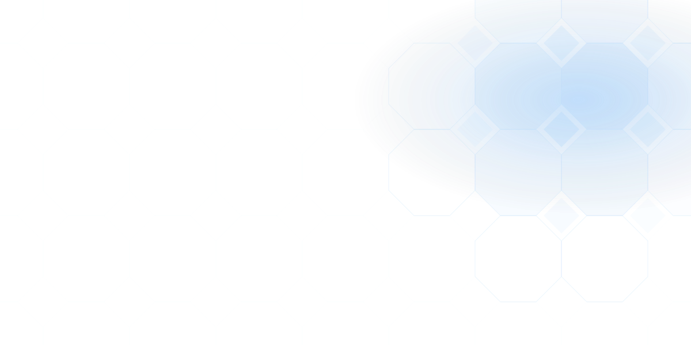
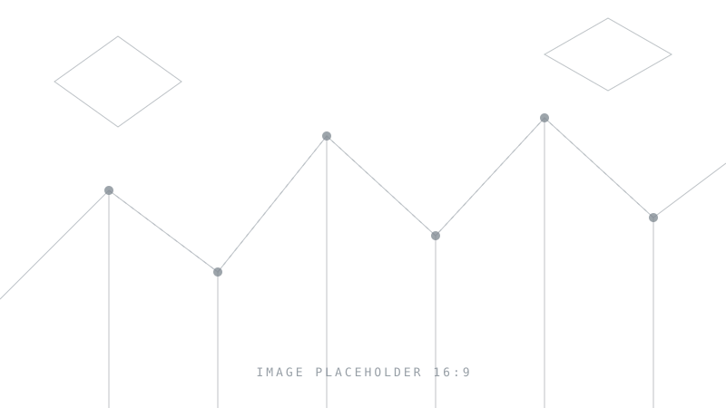

01
Bioinspired Mechanics & Living Systems
Living matter treated as a mechanical system: tissue that heals, skeletons that breathe, structures that grow into their loading.
- Wound healing
- Avian breathing
- Growth & adaptation

Mechanics× Nature× Materials× Computation× Intelligent systems
We learn from nature, work out the mechanics that make it function, and turn those principles into materials, structures and systems that hold up in the real world.
Research ecosystem
Six research pillars, one shared method. Hover a node to preview it, select it to open the areas underneath, or follow the link into the full description. Biomimetics is drawn as a ring rather than a branch: it runs through every pillar instead of sitting beside them.
The interactive map needs JavaScript. The same structure is listed below.
Hover or tap to preview · select to expand · arrow keys to move
Research pillars
How does form produce function: in tissue, in a folded sheet, in an interlocked assembly, in a printed lattice? Each pillar answers it with different tools.
01
Living matter treated as a mechanical system: tissue that heals, skeletons that breathe, structures that grow into their loading.
02
Stiffness, strength and failure set by geometry rather than chemistry: interlocked blocks, folded sheets, segmented protective shells.
03
Structures that sense, actuate, deploy and reconfigure: from origami robots to adaptive facades and wearable architectures.
04
Finite and discrete element models, nonlinear dynamics and topology optimisation used to expose mechanisms and search design spaces.
05
Additive manufacturing, recycled feedstocks and process–structure–property relations, with circularity treated as a design constraint.
06
Implants, prostheses, healing patches and assistive devices: mechanics designed around physiological loading and clinical reality.
Present in every project, without being a pillar of its own. Borrowing from living systems and designing for the human body raise questions that mechanics alone cannot settle, so responsible innovation is part of how projects are framed here and something the lab publishes on.
How we work
Wound healing and armour plating look unrelated until you notice that both are questions about how geometry, interfaces and time govern the way a structure carries load. That is the thread through everything in this lab.
i
We start from the mechanism that makes something work: a contact, a fold, an instability, a growth law and only then choose the material.
ii
Biological systems are read as engineering solutions and abstracted into geometry and mechanics. Inspiration has to survive being written as equations.
iii
Simulation, fabrication and testing run in the same loop; a model that has never been printed and pushed until it fails is only half-finished.
iv
Manufacturability, sustainability and the human consequences of a device are treated as design variables, not as things to check at the end.
Projects
Three lines of work that carry most of the group's effort.

The one-directional flow architecture of the hummingbird lung, rebuilt at engineering scale to pull carbon dioxide out of ambient air, backed by a US provisional patent.
Folded cells whose geometry supplies the motion and the stiffness, carried into cushions, energy absorbers, harvesters, self-resetting cartridges and a catheter adapter.
Blocks that interlock by shape rather than adhesive, so strength and toughness rise together and a damaged element can be replaced one block at a time.
Updates
The scale of the group's work, and what has happened recently.
We collaborate with mechanicians, biologists, clinicians, architects and manufacturers, and we supervise students at every level. If your question sits somewhere in the map above, get in touch.